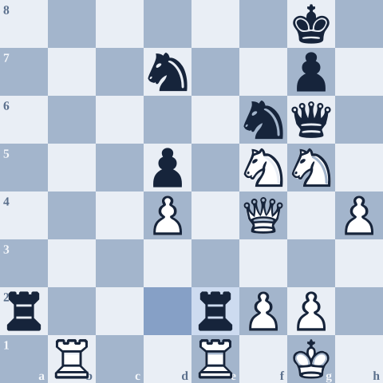

After my comeback to chess, my rating peaked at 2146. Then I went back to university and chess slid down my priority list. My decline started at the Penn Fall Swiss that October, and a rough winter break and a bad Liberty Bell Open dropped me below 2100.
That was the moment I had to be honest with myself. I wasn't going to reach National Master by doing more of the same, so I changed how I trained. I finished the Woodpecker Method, narrowed my repertoire, focused on one or two things at a time, played training games with lots of review, and played for wins instead of perfect games.
I wrote about those changes in The Final Push. This is the other half: three games from the climb back up, with the notes I wrote after each one. They aren't my cleanest games, but they're the ones where I can see the changes working, and where I can still see the habits that almost cost me.
The rematch
This was my grudge match against Richard after losing to him in the first round. Despite a strong position in that game, I got into serious time trouble and threw it away. This time, I knew I was going to keep up the pressure. Since it was four players and four rounds, this was a playoff between 1st and 2nd, and after losing in the first round it was nice to get some revenge.
I missed some critical moments to really take control, with my bad habit of settling for smaller advantages, but I kept up the pressure. Despite some complications in the endgame, I ended up cleaning up.
Key moments
- 2...e6I wasn't expecting this and had a decision to make: g3 for a Catalan, or Nc3 heading into a Nimzo or the Exchange Variation. Recently I've focused more on the Exchange Variation for both colors, so I felt comfortable going into that, and I wanted to avoid all the possible Catalan setups.
- 9...O-OJust getting a game here. I once had a training game like this where a minority attack worked out well enough, so I wasn't too bothered. Black is probably about equal, but it's just a regular Carlsbad.
- 17.e4!Now I've blown up the entire position, and my light-squared bishop and pieces are better placed. Black has more active rooks, but I felt confident that White was better.
- 20.Qb3Under one hour now, and much better time management than in my last three games. I still got into time trouble later, but it was much better regardless.
- 22.Bxh7+?My intended plan. The engine says 22.Nc7 was much better, and I realized that afterwards too.
- 28.h428.Qxf4 was maybe more natural here. I got scared off by some ...Rf8 ideas, even though I knew I had Ne6. A lack of objectivity in my calculations was a problem here.
- 30...Re2!After 30.Nf5 I thought it was over. My opponent also thought so and was ready to resign, but he found 30...Re2!, keeping the game afloat. This definitely threw me off after I thought I was forcibly winning, and I sank a lot of time here. I settled on 31.Qf3, but maybe it isn't best. Now I'm down to three minutes.

- 52...Ne4!I had missed this idea from afar, and now ...Qg3 is threatened with ...Ne6 on the way.
- 53.Nf5!Holds everything together.
- 55.Ne7+!And Black resigned because of 55...Kh8 56.Nf7#.
What changed: the opening was one I'd actually narrowed down to, and my time management was much better than in the first-round loss. What didn't: I settled for the smaller advantage (22.Bxh7+ instead of 22.Nc7) and second-guessed a calculation I had right (28.h4 instead of 28.Qxf4). That's how a winning position turned into a three-minute scramble.
Drawing a GM
The Philly Open was likely my best event: a draw, then three straight wins (two of them near-perfect games against 2000+ players), then a final-round draw with GM Maxim Dlugy as Black. I ended up tying for 3rd despite a strong field of GMs and other titled players.
This was my first result against a GM, after previously losing to GM Joel Benjamin at the US Open. A draw here really validated a lot of my chess, that I had the strength to rival people at the highest level. I always had this issue of wondering why I'm doing something I'm at a low level at, but this gave me a lot of strength.
Now, I will say this game isn't pretty. I built up and squandered an opening advantage as Black. He outplays me but misses some critical ideas to cement his advantage at a few points. Then a natural but slow move like Qc3 lets everything trade off, and I hunt down the draw.
Key moments
- 2.Bf4I saw he played the London only online and in some tournament games, so I prepped my London line better this time.
- 10...Ng7He later said this was a smarter move order than ...O-O first, which Oparin played against him in the World Blitz.
- 11...Nf5He deviated here and I was trying to figure out my lines. I was deciding between ...O-O, ...f5, and ...Nf5. I figured ...Nf5 leads to some favorable trades and is more forcing.
- 21...e5I offered a draw here, lol. This was the strongest my position got all game too. He played 22.Nc2 quickly, though.

- 22...Be8I tried to do too much in this middlegame after getting this setup. I should've played it more like a usual QGD Exchange, where White can sit behind the strong center, maneuver, and take their time.
- 25...e4?!A self-inflicted inaccuracy. Now White gets the initiative after I lock things up and release the tension. I should've looked at 25...exd4 more concretely. I rushed into ...e4 without understanding my follow-ups.
- 32...b5!?Probably overambitious. I like that I played to fight here, but this was probably too much. I thought I still had the advantage, but I should've started hunkering down and laying low.
- 35.a3And I start realizing I'm in big trouble now, because ...Nc4 doesn't work well anymore.
- 38.Rh7?The engine's c4 break wins for White here (38.c4!!), and it was there on moves 37 and 39 too. We both see it, but he avoids the crazy complications and lets me off the hook. A good lesson for playing down: trying to take things too easy can give up your advantages.
- 45...Rxb4??I wanted to play 45...Bb5! here, but I got scared off by all the tactics and complications with d5. And 46.Nc2! I missed completely, for whatever reason.
- 47...Qc8?47...Ne5! was the key difference. I didn't believe in this variation and didn't calculate it correctly at all.
- 48.Qc3?!His big mistake in the game. It quickly liquidates to an equal endgame from here.
- 48...Bd7!With a huge sigh of relief now. It all goes smoothly into the draw from here.
- 60...Nxc2Black has some chances here, but I just wanted my draw.
- 99.Kb6I just drew a GM!
What changed: I had prepped his London, and the opening went exactly to plan. What didn't: once I had the advantage, I tried to do too much (25...e4, 32...b5) instead of playing it like the QGD Exchange structures I know. I held on because I kept fighting, and because he missed 38.c4.
I wrote up this game in full, with all the lines I looked at afterwards, in Drawing a GM.
My first win over an FM
The first time I beat an FM. I've known Gunnar, Colorado's current strongest player, since I was a kid, and I actually had a positive score against him after a lucky win in the CO Closed around 2014. I had struggled to beat NMs recently, and I was losing a bit of confidence here. Gunnar tried to get away with too much, giving up a nice opening advantage, and I eventually punished him after giving him a chance to get out.
Key moments
- 7...Nc6This all follows my KIA line.
- 12...a4The key point of this line, trying to break through with ...a3.
- 15...c4?!The big mistake here. Black doesn't get much play from this break, and it's too panicky a reaction on the queenside.
- 16.Nxd5!?I just did not see this coming at all. A nice tactic to break everything open. In my head, I was so preoccupied with h5, ...h6, Ng4 and so on. 17.e6 is the point.
- 20.Qe8??I saw this move ahead of time but figured it didn't do anything. Then he played it, and I was still sure it didn't do anything. I trusted him too much here, and instead of snap-taking on c2, I played 20...Rd8 to be "safe," which lets White back into the game with either Qe3 or cxd3. Thankfully, he compounded his error.
- 21.Bh3??Compounding the error. Now I couldn't let this slide. After 21...dxc2!, White has a lot of active pieces but not enough compensation.

- 24.Re6I spent way too much time trying to figure out if ...fxe6 was better.
- 25...Kh8!The key idea holding my position together. 25...Rxf7?? loses to 26.Re8+ Rf8 27.Be6+ Kh8 28.Nf7+ and mate.
- 27...Qxe1+!Necessary and strong.
- 35.Qe6??With a clean conversion, helped by this.
What changed: Woodpecker and Perfect Your Chess. The tactics in this game came fast, and I saw ...Kh8 and ...Qxe1+ when it mattered. What didn't: I trusted my opponent over my own analysis on move 20, and it almost let him off the hook.
What the three games have in common
Reading my notes back, the same few things keep coming up:
- Settling. In the Shtivelband game, 22.Nc7 was much stronger than the plan I'd committed to, due to my bad habit of settling for smaller advantages.
- Doing too much. Against Dlugy, the advantage came from playing simple and harmonious moves, and it went away when I tried to overpress.
- Not trusting my calculation. Twice, I had the right idea and talked myself out of it.
- Time. Better but not fixed: I still ended the Shtivelband game with three minutes.
None of these games were clean. But in all three I had an opening I understood, had my tactical ability sharpened off the board, and kept fighting when it went wrong.
2203
I left for Penn at 2187 and played regular local quads. Funnily enough, I took an early draw as Black in a position that was -5 in my favor, and got stuck at 2199.29. Finally I won a first-round game against an 1890 at the Penn Fall Swiss, withdrew, and finished at 2203. In another twist of fate, the Penn Fall Swiss is where my rating decline had started. It all came full circle.
I'm grateful for every training partner, opponent, coach, and friend who made it worth it. If you're on your own path to a goal like this, I hope something here helps. All of these games and a few more are in my My 60 study on Lichess.